නම ශ්රේණිය 6 → O/L
ඉංග්රීසි විනෝදයෙන් ඉගෙන ගන්න, O/L විභාගයේ දිලිසෙන්න.
ක්රීඩා, පාඩම්, කථන පුහුණුව සහ සැබෑ විභාග ප්රශ්න පත්ර, 6 ශ්රේණියේ සිට O/L දක්වා සිසුන් සඳහා එකම ආරක්ෂිත යෙදුමක.
072 281 6456 · ගිණුම් සාදන්නේ අපේ ගුරුවරුන්ය. එක්වීමට WhatsApp පණිවිඩයක් එවන්න.
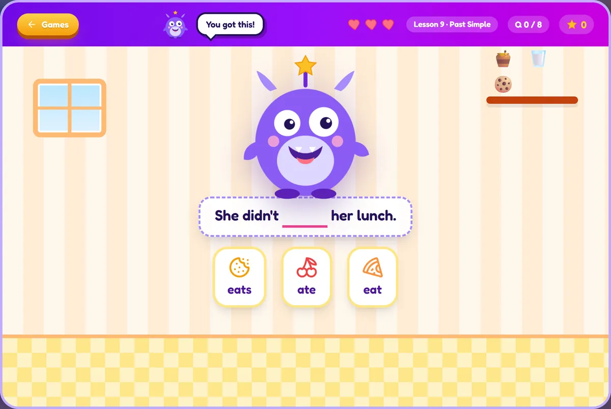
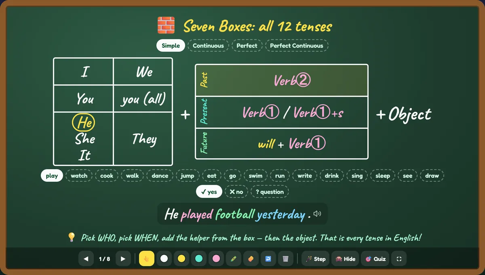
මෙවැනි ක්රීඩා 43ක්!
ප්රගති වාර්තාව
English Genius · 2026| යෙදුම තුළ | ගණන |
|---|---|
| විනෝද ක්රීඩා | 43 |
| පාඩම් | 103 |
| කාල පැහැදිලි කිරීම් | 12 |
| කළු ලෑලි උපක්රම | 44 |
| මැජික් වචන කාඩ් | 334 |
| සම්පූර්ණ O/L පුහුණු ප්රශ්න පත්ර | 3 |
විශිෂ්ටයි. දිගටම කරගෙන යන්න!
එක් යෙදුමක්, ඉංග්රීසියේ සෑම කොටසක්ම
පළමු "I play / he plays" සිට සම්පූර්ණ කාලානුරූප O/L ප්රශ්න පත්රය දක්වා. සිසුන් පාඩමක් ඉගෙනගෙන, ඉන්පසු එය ක්රීඩා කරති.
- ව්යාකරණ පාසලපින්තූර, ශබ්ද සහ ක්ෂණික ප්රතිචාර සහිත කෙටි පාඩම් 103ක්, 6 ශ්රේණියේ සිට O/L දක්වා, සෑම ශ්රේණියකටම ආදර්ශ විභාගයක් සමඟ.
- ක්රීඩා ශාලාව3D රේස්, නින්ජා ක්රීඩා, බලකොටු ආරක්ෂාව සහ අභ්යවකාශ ක්රීඩා ඇතුළු ක්රීඩා 43ක්. සෑම ක්රීඩාවක්ම සිසුවා දැන් ඉගෙනගත් පාඩමම භාවිත කරයි.
- දෛනික පුරුද්දක්තරු, මට්ටම්, කුසලාන සහ දෛනික අභියෝගය සිසුන් සෑම දිනකම නැවත ගෙන එයි.
ක්රීඩා කිහිපයක් හඳුනාගන්න
සෑම ක්රීඩාවක්ම සැබෑ ක්රීඩාවකි: නැවත නැවත ක්රීඩා කිරීමට සාදන ලද, කිසිදා කම්මැලි අභ්යාසයක් නොවේ.
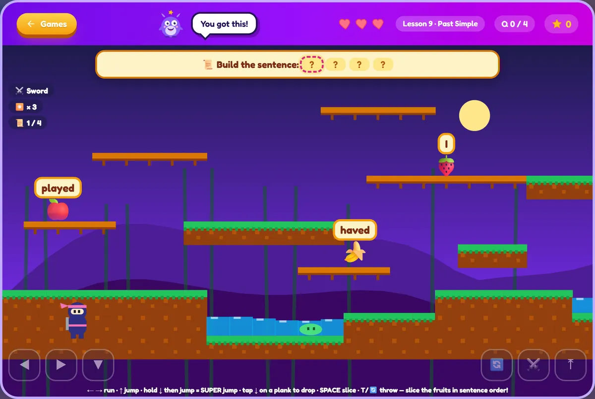
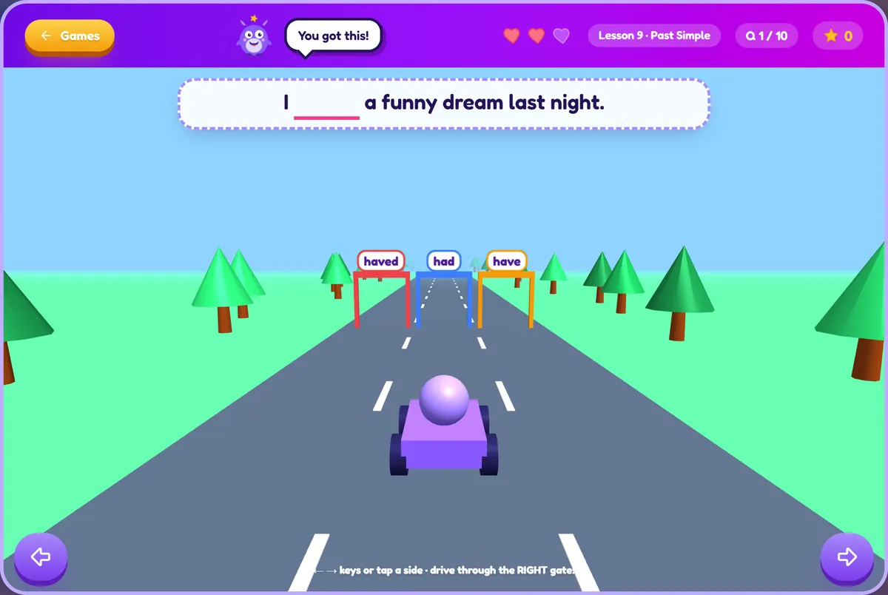
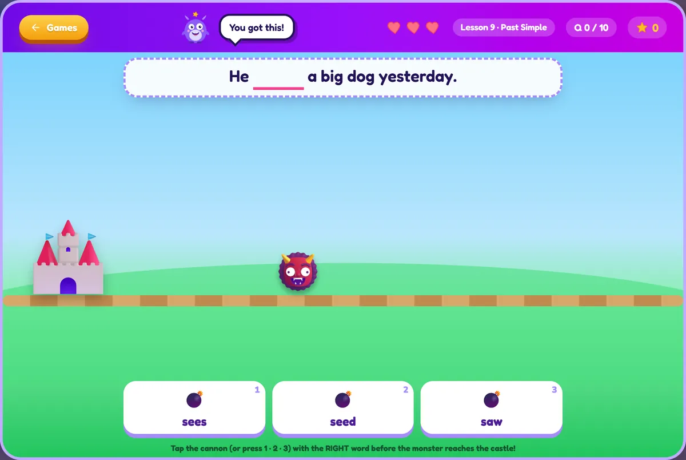
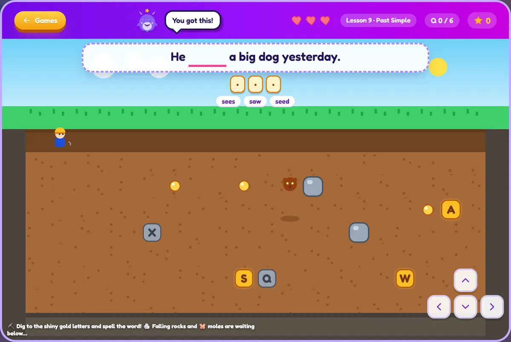
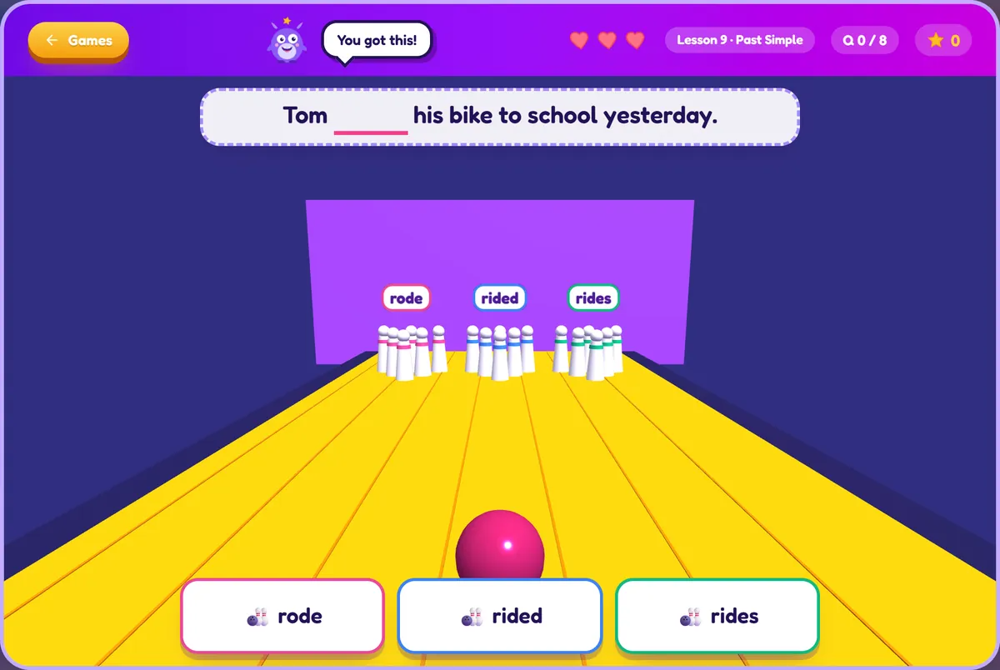
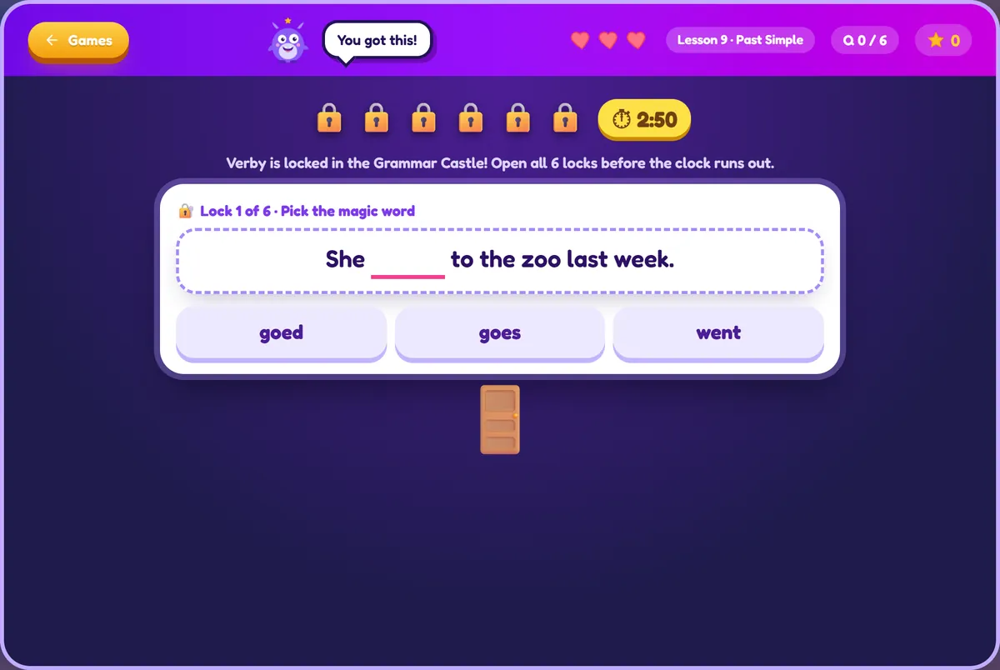
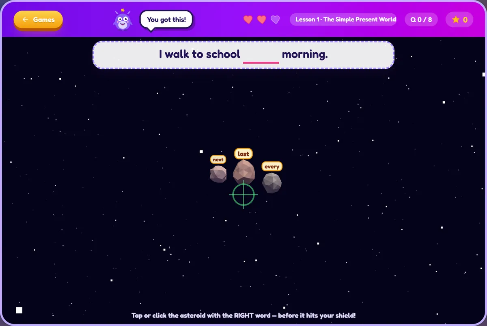
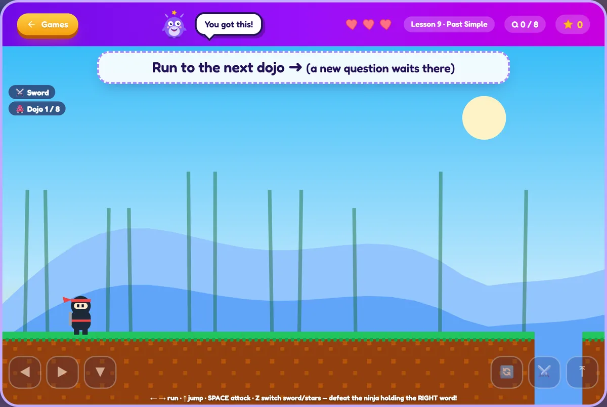
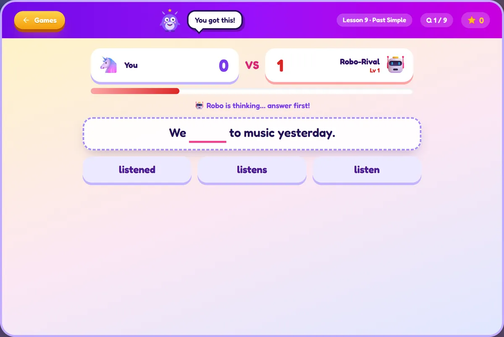
+ තවත් ක්රීඩා 34ක් ඇතුළත
6 ශ්රේණියේ සිට O/L දක්වාම
සෑම ශ්රේණියකටම තමන්ගේම පාඩම් සහ ආදර්ශ විභාගයක් ඇත. ඊළඟට ඉගෙන ගත යුත්තේ කුමක්දැයි සිසුන් සැමවිටම දනී.
- 6
6 ශ්රේණිය
වර්තමාන කාලය, මැජික් S, articles, බහුවචන, ආචාර කිරීම් සහ පළමු කියවීම් ඡේද.
- 7
7 ශ්රේණිය
අතීත සහ අනාගත කාල, සැසඳීම්, සන්ධි පද, නිවේදන, ලිපි සහ සංවාද.
- 8
8 ශ්රේණිය
Perfect කාල, කර්ම කාරකය, වාර්තා කළ කථනය, කොන්දේසි, ඊමේල් සහ නිල ලිපි.
- 9
9 ශ්රේණිය
කාල 12ම, phrasal verbs, වචන සෑදීම, ප්රස්තාර, ලිපි සහ කතා ලිවීම.
- O/L
O/L
ටෙස්ට් 16ටම විභාග කුසලතා, රචනා, සාරාංශ සහ සම්පූර්ණ කාලානුරූප පුහුණු ප්රශ්න පත්ර.
O/L විභාග ශාලාව
සැබෑ ටෙස්ට් 16 ආකෘතියේ සම්පූර්ණ පුහුණු ප්රශ්න පත්ර: කාලය මනිනු ලැබේ, ස්වයංක්රීයව ලකුණු කර A සිට W දක්වා ශ්රේණි ලබා දේ.
සිසුන් O/L ප්රශ්න වර්ගම පුහුණු වී තම ශ්රේණිය දකිති, එබැවින් සැබෑ විභාගය හුරුපුරුදු දෙයක් ලෙස දැනේ.
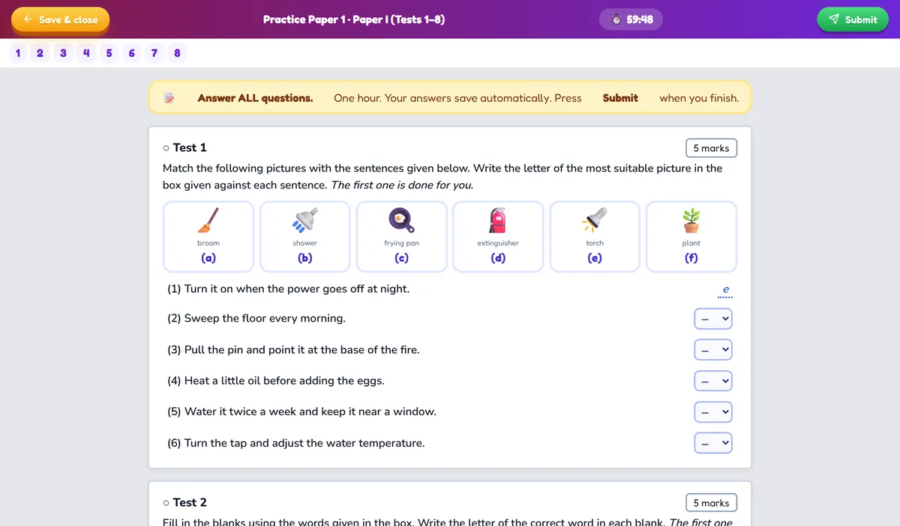
Talk Town කථනය
සරලව ආරම්භ වී ක්රමයෙන් වර්ධනය වන කථන පාඩම්. සිසුන් මයික්රොෆෝනයෙන් කතා කර තමන්ගේ දියුණුව අසති.
මයික්රොෆෝනය සමඟ දෛනික කථන පුහුණුව ඉංග්රීසි කතා කිරීමේ බිය නැති කරයි.
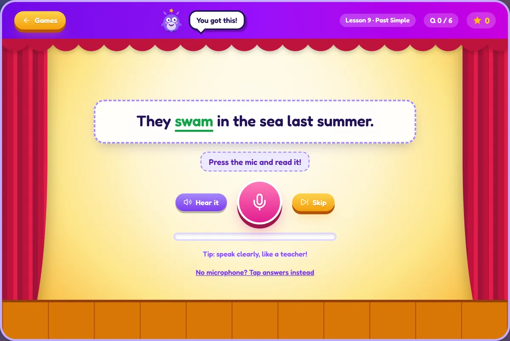
මුළු පන්තියටම ඉගැන්වීමට සාදා ඇත
"Seven Boxes" කාල සූත්රය වැනි මතක උපක්රම 45ක්, පන්ති ප්රශ්නාවලියක් සමඟ, විශාල තිරයක ඉගැන්වීමට සකසා ඇත.
- පෞද්ගලික ගිණුම් අප විසින් සාදන ලද ගිණුමක් ඇති සිසුන්ට පමණක් පිවිසිය හැක. පොදු ලියාපදිංචියක් නැත, ආගන්තුකයන් නැත.
- ඔවුන් දකින දේ ඔබ තෝරන්න ගුරුවරුන් එක් එක් සිසුවාට හෝ මුළු පන්තියටම නිවැරදි ක්රීඩා, පාඩම් සහ ප්රශ්න පත්ර විවෘත කරති.
- සෑම තැනකම ප්රගතිය තරු සහ පාඩම් සිසුවාගේ ගිණුමේ සුරැකේ: දුරකථනය, ටැබ්ලටය හෝ පරිගණකය මත.
- දැන්වීම් නැත, චැට් නැත ඉගෙනීම සඳහා පමණක් සාදා ඇත: දැන්වීම් නැත, පොදු චැට් කාමර නැත.
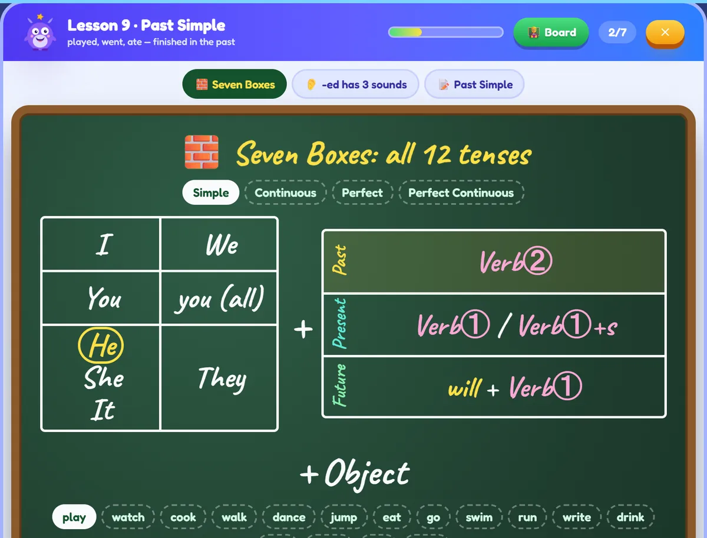
English Genius සිසුන්ට උපකාර වන ආකාරය
කතා කිරීමට විශ්වාසය
මයික්රොෆෝනය සමඟ දෛනික කථන පුහුණුව ඉංග්රීසි කතා කිරීමේ බිය නැති කරයි.
මතකයේ රැඳෙන ව්යාකරණ
නීතියක් ඉගෙන, වහාම එය ක්රීඩාවක භාවිත කරන්න. පුනරාවර්තනය ක්රීඩාවක් මෙන් දැනේ.
සැබෑ විභාග පුහුණුව
සිසුන් O/L ප්රශ්න වර්ගම පුහුණු වී තම ශ්රේණිය දකිති, එබැවින් සැබෑ විභාගය හුරුපුරුදු දෙයක් ලෙස දැනේ.
දෛනික පුරුද්දක්
තරු, මට්ටම්, කුසලාන සහ දෛනික අභියෝගය සිසුන් සෑම දිනකම නැවත ගෙන එයි.
ක්ෂණික ප්රතිචාර
සෑම පිළිතුරක්ම පැහැදිලි විස්තරයක් සමඟ වහාම පරීක්ෂා කෙරේ, වැරදි පාඩම් බවට පත්වේ.
සෑම මට්ටමකටම
සිසුන් තමන් සිටින තැනින් ආරම්භ කර තමන්ගේම වේගයෙන් ඉදිරියට යති, 6 ශ්රේණියේ සිට O/L දක්වා.
පහසු පියවර 3කින් එක්වන්න
අපට පණිවිඩයක් එවන්න
072 281 6456 අංකයට WhatsApp පණිවිඩයක් එවන්න හෝ අමතන්න.
ඔබේ ගිණුම ලබාගන්න
අපි සිසුවා සඳහා පරිශීලක නාමයක් සහ මුරපදයක් සාදන්නෙමු.
පිවිසී ක්රීඩා කරන්න
ඕනෑම දුරකථනයක, ටැබ්ලටයක හෝ පරිගණකයක මෙම වෙබ් අඩවිය විවෘත කර, පිවිසී ඉගෙනීම අරඹන්න.
English Genius හි සිසුන් ඉගෙන ගන්නා දේ
6 ශ්රේණියේ සිට O/L දක්වා ශ්රී ලාංකික ඉංග්රීසි විෂය නිර්දේශය, ක්රීඩා හරහා පුහුණු වේ.
ඉංග්රීසි ව්යාකරණ සහ කාල
- ඉංග්රීසි කාල 12ම
- Present simple සහ continuous
- Past simple සහ past perfect
- අනාගත කාල
- කර්ම කාරකය (Passive voice)
- වාර්තා කළ කථනය (Reported speech)
- කොන්දේසි වාක්ය (If clauses)
- Question tags
- Articles a, an, the
- Prepositions in, on, at
- Modal verbs
- Relative clauses
- Phrasal verbs
- Subject–verb agreement
ඉංග්රීසි කතා කිරීම
- මයික්රොෆෝනය සමඟ කථන පුහුණුව
- එදිනෙදා සංවාද
- උච්චාරණය
- ආචාර කිරීම සහ ආචාරශීලී ඉංග්රීසි
- ප්රශ්න ඇසීම සහ පිළිතුරු දීම
- තමා ගැන කතා කිරීම
කියවීම සහ ලිවීම
- කියවීමේ අවබෝධය
- ලිපි ලිවීම (නිල සහ නොනිල)
- රචනා ලිවීම
- ඊමේල් සහ නිවේදන ලිවීම
- කතා ලිවීම
- සාරාංශ ලිවීම
- ප්රස්තාර සහ පින්තූර විස්තර කිරීම
විභාග සහ වචන මාලාව
- O/L ඉංග්රීසි ප්රශ්න පත්රය (ටෙස්ට් 16ම)
- O/L ඉංග්රීසි ආදර්ශ ප්රශ්න පත්ර
- 6, 7, 8, 9 ශ්රේණි ඉංග්රීසි
- ආදර්ශ විභාග
- වචන මාලාව සහ අක්ෂර වින්යාසය
- සමාන පද සහ විරුද්ධ පද
- වචන සෑදීම
නිතර අසන ප්රශ්න
ගිණුමක් ලබාගන්නේ කෙසේද?
072 281 6456 අංකයට WhatsApp හෝ දුරකථනයෙන් අප අමතන්න. අපි ගිණුම සාදා පරිශීලක නාමය සහ මුරපදය එවන්නෙමු.
මෙය කුමන ශ්රේණි සඳහාද?
6, 7, 8, 9 ශ්රේණි සහ O/L (10 සහ 11 ශ්රේණි). සෑම ශ්රේණියකටම තමන්ගේම පාඩම් සහ ආදර්ශ විභාගයක් ඇත.
කිසිවක් ස්ථාපනය කළ යුතුද?
නැත. එය දුරකථන, ටැබ්ලට් සහ පරිගණකවල වෙබ් බ්රව්සරයේ ක්රියා කරයි. ඔබට එය යෙදුමක් මෙන් මුල් තිරයට ද එක් කළ හැක.
එය O/L ඉංග්රීසි ප්රශ්න පත්රයට අනුකූලද?
ඔව්. පුහුණු ප්රශ්න පත්ර O/L ඉංග්රීසි ප්රශ්න පත්රයේ ටෙස්ට් 16 ආකෘතිය අනුගමනය කරයි, මුල් ප්රශ්න සහ ලකුණු දීමේ මාර්ගෝපදේශයක් සමඟ.
එය ළමුන්ට ආරක්ෂිතද?
ඔව්. පොදු ලියාපදිංචියක්, දැන්වීම් හෝ ආගන්තුකයන් සමඟ චැට් නැත. එක් එක් සිසුවාට විවෘත කළ හැකි දේ ගුරුවරුන් පාලනය කරති.
සිසුන්ට කතා කිරීම පුහුණු විය හැකිද?
ඔව්. Talk Town පාඩම් සහ කටහඬ ක්රීඩා මයික්රොෆෝනය භාවිත කරයි, එබැවින් සිසුන්ට කතා කිරීම සහ සවන් දීම පුහුණු විය හැක.
English Genius සමඟ ඉගෙනීම අරඹන්න
WhatsApp පණිවිඩයක් එවන්න හෝ අපට අමතන්න. අපි ඔබේ ගිණුම සකසන්නෙමු.